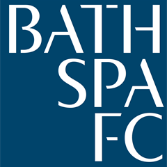

Football Taster Session
by Bath Spa FC
Led by Bath Spa FC team members some of the university’s team would like to invite people down to get a taste for football, there will be a children’s training session and game as well as an adults game happening at the same time.
Requirements
A pair of football boots will be required as this session will be taking part on grass as well as safety equipment such as shin pads, we will provide bibs and all the extras including cones, balls, and our own referees!
Location
Newton Park Campus
BA2 9BN
Tags
#sport #football